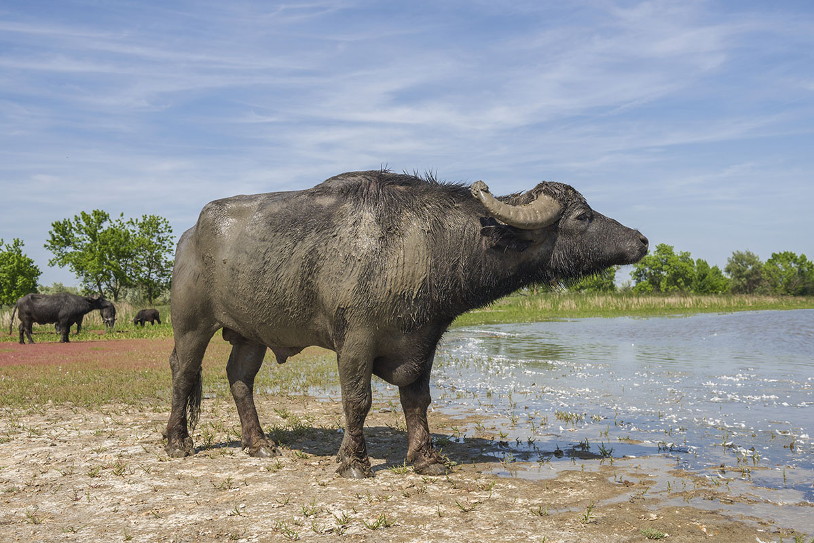
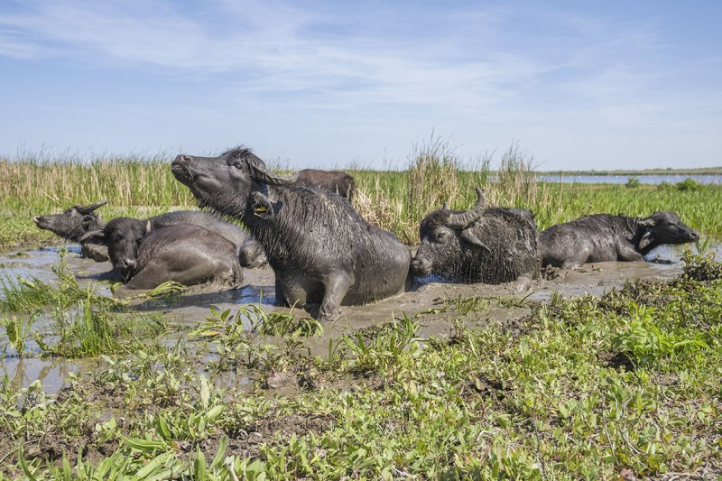
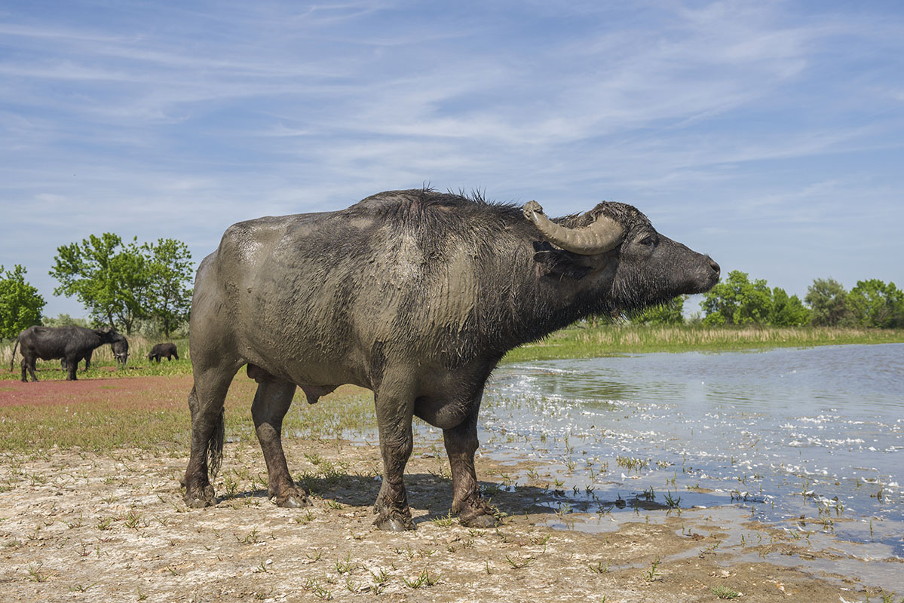
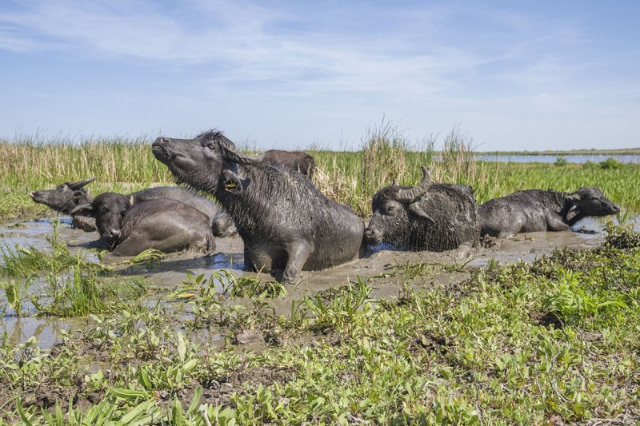

|
非洲水牛 (Syncerus caffer）
是一種產於非洲的牛科動物，平均高度約1.4-1.7公尺，體長2.1-3.4公尺，體重約425-900公斤，平均壽命15-20 年。附近有水源和蔭涼處的叢林、草原或熱帶稀樹大草原就可棲息。吃草。牠們平均每天花8-10小時進食，會把食物反芻。  繁殖 雌性通常5歲左右誕下第一胎，之後隔年生產，雄性大概7歲開始交配。發情期是每年3至5月，懷孕期是330至345 日，  近親 非洲紅水牛是非洲水牛的近親。跟亞洲水牛的親緣卻甚遠。 /bufflo05.png) |
|
非洲水牛 (Syncerus caffer）
是一種產於非洲的牛科動物，平均高度約1.4-1.7公尺，體長2.1-3.4公尺，體重約425-900公斤，平均壽命15-20 年。附近有水源和蔭涼處的叢林、草原或熱帶稀樹大草原就可棲息。吃草。牠們平均每天花8-10小時進食，會把食物反芻。  繁殖 雌性通常5歲左右誕下第一胎，之後隔年生產，雄性大概7歲開始交配。發情期是每年3至5月，懷孕期是330至345 日，  近親 非洲紅水牛是非洲水牛的近親。跟亞洲水牛的親緣卻甚遠。 |